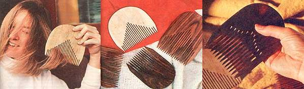

"Toy animals aren't the only potentially salable items you can make from woodshop scraps," Jim Ballard wrote us after reading Homer and Gerry Debo's We Make (and Sell) Fun Animals from Woodshop Scraps, November/December 1977. "You can also recycle hardwood bits and pieces into handsome, durable combs - and sell those finished combs for up to 7 dollars apiece!"
Sometime back, while visiting a friend's shop, I noticed that my friend (like most folks who dabble in woodworking) had accumulated a boxful of hardwood scraps - scraps that were destined to be tossed out. At the time, I was a little low on cash, so I decided to try my hand at working these beautiful bits of wood into usable - perhaps even salable - objects, namely combs.
Eventually, after much trial and error (with hundreds of comb teeth popping off and flying all over the shop), I succeeded in developing a system that I could count on to produce quality combs time after time - combs, moreover, that I could sell whenever I wanted for as much as 7 dollars apiece!
I'll bet that you can do the same thing. Using the following procedure, you should have no trouble producing (and selling) your own good-looking hardwood combs just as I have done. (I do urge you to improvise as you see fit, however, since the suggestions that follow are only that - suggestions.)
Your main piece of combmaking equipment, naturally enough,will be a saw. A table saw does a great job of cutting each comb's teeth, but - if you have a steady hand and a careful nature - a miter box and handsaw will do the job, too. I've found, though, that a band saw tends to make wavy, uneven cuts - and I don't recommend that you use one.
In addition to a saw, you'll need several grades of sandpaper, ranging from coarse to very fine. Then too, a belt sander will speed up the shaping process and is - I've found - ideal for tapering and sharpening a comb's teeth. A disc sander or sanding block will work, however, if you don't have (or have access to) a power sander - it'll just take a little longer.
(Sander or no sander, be sure to wear a good mask over your nose and mouth whenever you sand for a prolonged period, since the very fine dust given off by hardwoods is especially irritating to the lungs.)
A bit of No. 3 steel wool and one can each of shellac and linseed oil will round out your supplies.
Almost any kind of hardwood will do for this project. Walnut, zebrawood (which has nice grain patterns), bird's-eye maple, purpleheart, rosewood (which darkens with time), cocobolo and teak are some of my favorites. The exact dimensions of the wood, naturally, will vary with each scrap and each comb design - but as a general rule, I like to work with pieces of wood that are between 3/8-inch and 1/2-inch thick. Remember, too, when selecting wood that the teeth of each comb must follow the direction of the grain (otherwise they're likely to snap off while the comb is being made, or worse, used ).
If you don't have any woodshop scraps - or you really get excited about making combs and decide to go into this mini-business in a big way - you can always buy your raw materials from the local lumber dealer. You'll find that the cost per comb (even when you pay full retail for wood) comes out quite low: anything from a few pennies to, at most, about 80 cents. Which is not bad, since you can resell those same hunks of wood for a few dollars each after you've finished with them.
When you're ready to begin, select a hardwood scrap and pencil in a line to mark the end of the saw cut(s) for the teeth. This line can be curved, straight, angled or whatever shape pleases you. In any case, it should be made across the wood's grain and about halfway "up" the piece of wood.
Now comes the somewhat delicate operation of cutting the comb's teeth. If you have a table saw, use a blade that'll give you a cut 1/8-inch wide and set the blade so that it cuts all the way through the wood. Brace the wood against the fence and make your first cut about 1/2-inch in from one end of the scrap (saw right up to the penciled mark). Next, move the block over 1/8-inch and make another cut. (I've gotten good results just eyeballing the spacing of the teeth, but you can measure or use a guide if you like.) Continue to cut teeth across the entire block - leaving 1/8-inch slits between 1/8-inch teeth - until you come to within 1/2-inch of the scrap's other edge.
At this point, flip the comb over and carefully let the saw's blade retrace (and extend by 1/4-inch) each cut. This will produce the identical saw angle and design on each side of the comb. (Note: If you're using a handsaw and miter box, this recutting is unnecessary.)
Now it's time to shape the comb's handle. First, on both sides of the comb ,outline the handle's intended final outline. (There's no need for fancy French curves here. To lay out the semicircular comb shown in the accompanying photos, I merely traced around a large roll of masking tape.) Be playful. Experiment. Try numerous designs before you settle on the one that suits you best.
OK. Saw and/or sand the comb as necessary to work it down to the shape you want. If you're using a belt sander, you can sand away the corners of the handle quickly with coarse sandpaper, then fine-sand it from there. A band saw or coping saw will speed the roughing-out process if you don't have access to a power sander.
Before you go any further, you'll want to sand your comb's teeth until they taper to a point. Otherwise, you'll have a comb that (viewed from above) is exactly the shape you want, but which (viewed from the side) is uniformly 3/8- or 1/2-inch (or whatever) thick. And that kind of comb is still no comb at all!
So. Press the piece of work flat against the belt of your sander - teeth facing "downstream" in the direction of the belt's rotation - and gradually apply increasing pressure to the teeth to make them sand down to an even taper. Then flip the comb over and sand the other side to the same taper. Continue this sanding until the ends of the teeth are sharp (but not feather-edged), and the comb's handle is no thicker than 1/2-inch (nor thinner than 1/4-inch).
Now it's time to actually put points on the ends of the tapered teeth. To do this, loosen the belt on your sander so that it can be slipped over about 1 inch beyond the edge of the machine. Then [1] turn the sander on, [2] hold the comb so that the extended edge of the belt is positioned between two teeth, [3] angle the comb a bit so as to sand away part of the tip of one tooth, and [4] turn the comb over and sand the other side of the same tooth to a point. Do this for each tooth, and try to give all of the teeth the same shape and degree of sharpness. If you don't have a belt sander, you can sand the teeth by hand.
Finally, sand "in" the edges of the comb at an angle to put a point on the comb's 1/2-inch-wide end teeth.
All right. With sandpaper of increasingly finer grit, smooth over any rough spots that may still exist on the comb (especially along the insides of the teeth). Don't rush, it'll take time to do this job right.
If you want to bring out the texture and natural beauty of the finished "work of art", you can - if you wish - apply a light sealer. I like to combine equal amounts of shellac and linseed oil (about three ounces of each) and apply the mixture sparingly to the comb, rubbing it in well with a rag so as not to leave any excess oil. (Believe me, if even a trace of oil remains, you'll gunk up your hair!)
After the oil-shellac mixture has set in and dried, you can buff the entire surface of the comb with No. 3 steel wool. This'll bring out the grain's texture even more and give a luscious shine to the finish.
Of course, if you don't want to bother applying linseed oil and shellac to your finished comb(s), you can simply let the natural oil from your hair slowly work into the wood.
Nor does the finishing process have to stop here. Mother-of-pearl or semiprecious stones can be inlaid in a comb's handle, or - if you're artistically inclined - you might carve etchings into the handle that no amount of sawing or sanding will be able to duplicate.
Once you've mastered each step of the combmaking process, you should have no difficulty turning out two completely finished basic combs per hour. (The more sophisticated your equipment, the faster you'll be able to produce 'em.) Since I have no desire to mass-produce these items on a grand scale, however, I usually work at a more leisurely pace and spend lots of time with each individual comb.
Marketing this work is simply a matter of letting people know it's available. Most folks enjoy buying fine, handcrafted wooden items, and these woodshop-scraps-turned-combs definitely fall into that category. Once, during a single day at a local street fair, I sold 24 combs (all I had with me) at prices ranging from 3 to 7 dollars apiece. A small fortune? No. Extra pocket money? Most certainly.
You shouldn't have any trouble finding retail outlets for these combs, either. After you've filled all the orders you'll get from friends (and believe me, they'll want some!), you can take samples around to department stores, shops specializing in makeup and toiletries, hair salons and barber shops. Some outlets will want to purchase combs outright, others will prefer to handle them on consignment. Either way, you make money.
Not long ago, while selling combs at a fair, I was given an interesting suggestion by the weaver sitting at the next table. She said, "You know, all you have to do is widen the space between the teeth of your combs, and you'll have the tapestry combs or 'beaters' which are much in demand among weaving folk." The lady explained how these special tools were used for "packing in the weft" to ensure tight, slackless patterns in a finished piece of woven material. I haven't followed up on the suggestion; but if what she says is true, a whole new world of marketing possibilities awaits me (and other amateur combmakers).
Don't get me wrong: Hardwood combs won't make you rich. Nonetheless, they are easy to make, they are beautiful, and they can put a jingle in your pockets. And the cost of the "raw materials" surely can't be beat!
|
MOTHER EARTH NEWS STAFF Your combs can be beautifully simple or highly decorative, with inlay or even etchings. |
 MOTHER EARTH NEWS STAFF Hardwood combs can be classically long and slender, or artfully rounded; choose whichever shape suits your taste. |
|